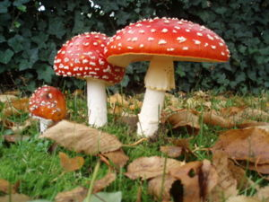

Búsqueda de setas
 De: La Frikipedia, la enciclopedia extremadamente seria.
De: La Frikipedia, la enciclopedia extremadamente seria.
No siempre es tan fácil encontrar setas
La búsqueda de setas es una antigua tradición india de origen volcánico que la humanidad lleva cientos de años practicando. Principalmente, son los padres los que inician a sus hijos en esto de las recogida de setas, y, en temporada, padre e hijo acuden a recolectar setas como Heidi hacía con su abuelo (antes de meterse en el mundo de las drogas. Después seguían recolectando setas, pero alucinógenas).
Tipos de búsqueda de setas
 Deliciosas setas comestibles
- Búsqueda de Champiñones: esta búsqueda la inició Super Mario en 1980 a.K. (antes de Konami). Con la escusa de tener que rescatar a la princesa Peach, se recorría el mundo entero en busca de champiñones alucinógenos para fumárselos con su hermano Luigi. Cuando Super Mario no podía ir a por los Champiñones, era su camello Wario quién se los suministraba.
- Búsqueda de Níscalos: estos son los típicos "Setos P'alpotajus", utilizados en los pueblos, principalmente castellanomanchegos, para darle regustillo y saborzuelo al potaje en cuestión. También sirven para la cultura del pueblo, como por ejemplo, para decir refranes tales como: "No comas más, que te se salen los níscalos por las orejas" o "Si de níscalos estuviera lleno el mundo, potaje to' los días".
Aquí Mario y Luigi con una seta fumable
- Búsqueda de Setas Venenosas: el principal objetivo de la recolección de estos híbridos es que alguien la casque. Que tu jefe no te sube el sueldo: le metes esta seta en la comida de Navidad y dices que la palmó de viejo o de una ingestión de palomitas en mal estado. También sirve para comértelos tú, en caso de ser rematadamente gilipollas; en otros casos, mejor no te las comas.
Procesos tradicionales de la Búsqueda de setas
- Se prepara todo en casita antes de salir al campo, al bosque, a la selva... Lo primero, nos equipamos con el armamento nuclear más avanzado, por si alguna mofeta se cruza en nuestro camino (Granadas de mano, Bombas de Hidrógeno, AK-47s, etc) y lo echamos todo en la mochila.
- Nos pillamos en la biblioteca el libro "Cómo saber si las setas matan o no matan" y lo echamos también a la mochila.
- Cogemos un saco de dormir por si la mofeta resiste al armamento nuclear y debemos dormir en el campo: lo echamos a la mochila.
Ya salimos de casita. Cogemos la M-490, hacemos trasbordo en Sevilla, para repostar. Ahora vamos a Galicia a desayunar, y, por fin, aparcamos en un bosque de Carabanchel Bajo (no Alto) y empezamos la búsqueda de setas mediante los siguientes pasos:
- Buscamos Pitufos. Una vez los hayamos encontrado, los seguimos hasta la seta en la que viven y, una vez allí, se les atraca a mano armada, se les roba y se les hace huir. Se extrae la seta (se arranca de cuajo) y así sucesivamente.
- Cuando ya hallamos llenado la cesta de setas y demás tubérculos, se mira en el libro si son venenosas. Si lo son, se tiran y se vuelve a empezar la recolección. Si son buenas, se llenan dos o tres cestas más.
- Si te encuentras a Super Mario fumando con su hermano, le rompes el cigarro y le dices que se vaya a arreglar cañerías, que para eso es su trabajo: fumar es malo.
- Ahora te vas a tu casa haciendo transbordo en Barcelona, Cádiz, París y Lisboa. En el camino te comes todas las setas, y cuando llegas a tu casa y tu mujer te dice: "Cariño, ¿y las setas para cenar?", y tú dices: "Me las he comido, cielo; pero me he divertido mucho". Entonces tu mujer te mata de la hostia que te da, se suicida por la tristeza, y todos felices comiendo perdices.
Anécdota
Un día, dos de Bilbado salieron a recoger setas, y uno ve un Rólex de oro y le comenta a su compañero
- Lahostiaputa Patxi, ¿has visto? ¿un Rólex de oro pues?
- Iñaki, la hostia, ¿estamos a setas o no estamos a setas?
Ver también
Autor(es):
- Doctor grijander
- Roms
- Viento
- Wwtawriter112
- Veni Vidi Vici
- Hans
- Trick7
- Assure brackett
Frikipedia 2005-2016, Licencia
GFDL 1.2 - Extraído por FrikiLeaks